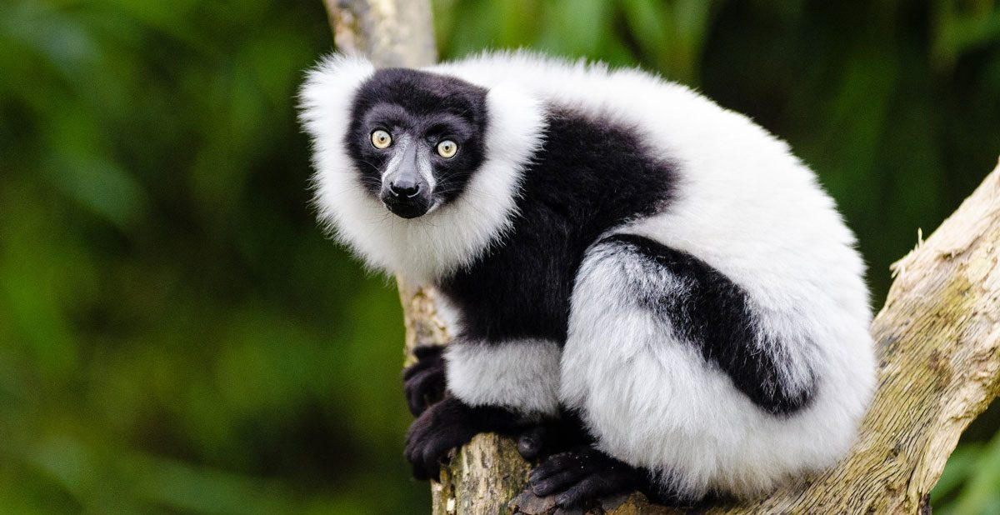
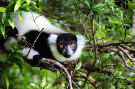
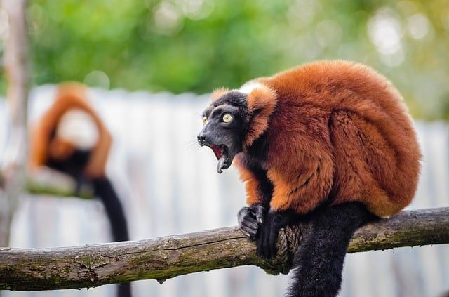
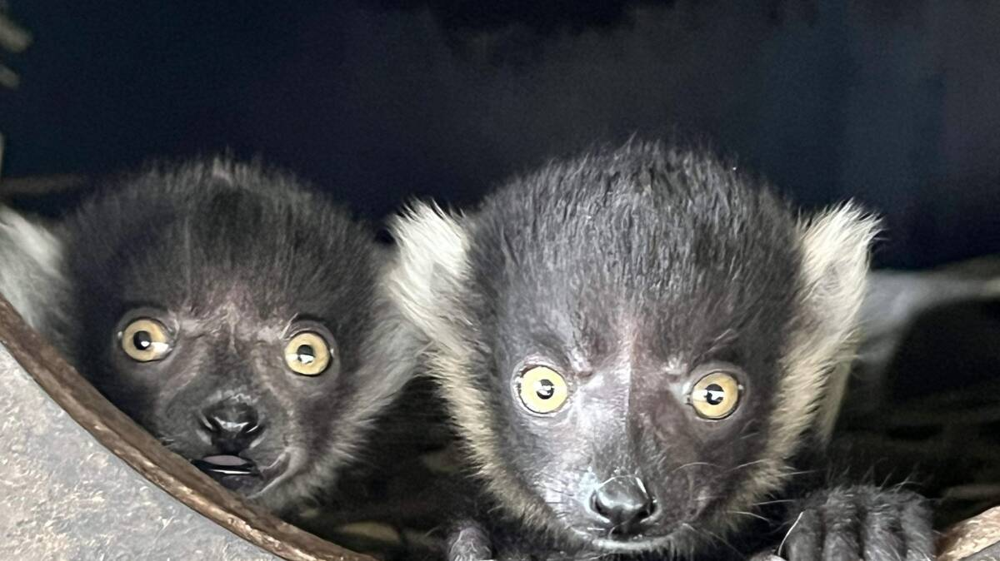

Ruff Lemur
-

The ruffed lemurs of the genus Varecia are strepsirrhine primates and are the largest extant lemurs within the family Lemuridae. Like all living lemurs, they are found only on the island of Madagascar. Formerly considered to be a monotypic genus, two species are now recognized: the black-and-white ruffed lemur, with its three subspecies, and the red ruffed lemur.
-

Ruffed lemurs are diurnal and arboreal quadrupeds, often observed leaping through the upper canopy of the seasonal tropical rainforests in eastern Madagascar. They are also the most frugivorous of the Malagasy lemurs, and they are very sensitive to habitat disturbance.
-

Ruffed lemurs live in multi-male/multi-female groups and have a complex and flexible social structure, described as fission-fusion. They are highly vocal and have loud, raucous calls.
-

Ruffed lemurs are seasonal breeders and highly unusual in their reproductive strategy. They are considered an "evolutionary enigma" in that they are the largest of the extant species in Lemuridae, yet exhibit reproductive traits more common in small, nocturnal lemurs, such as short gestation periods (102 days) and relatively large average litter sizes (2–3).